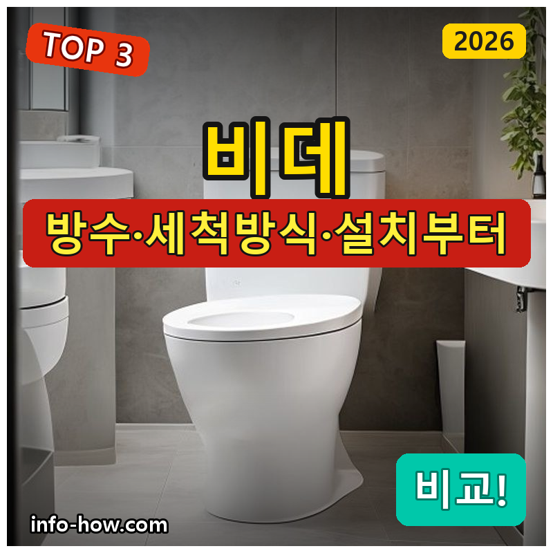
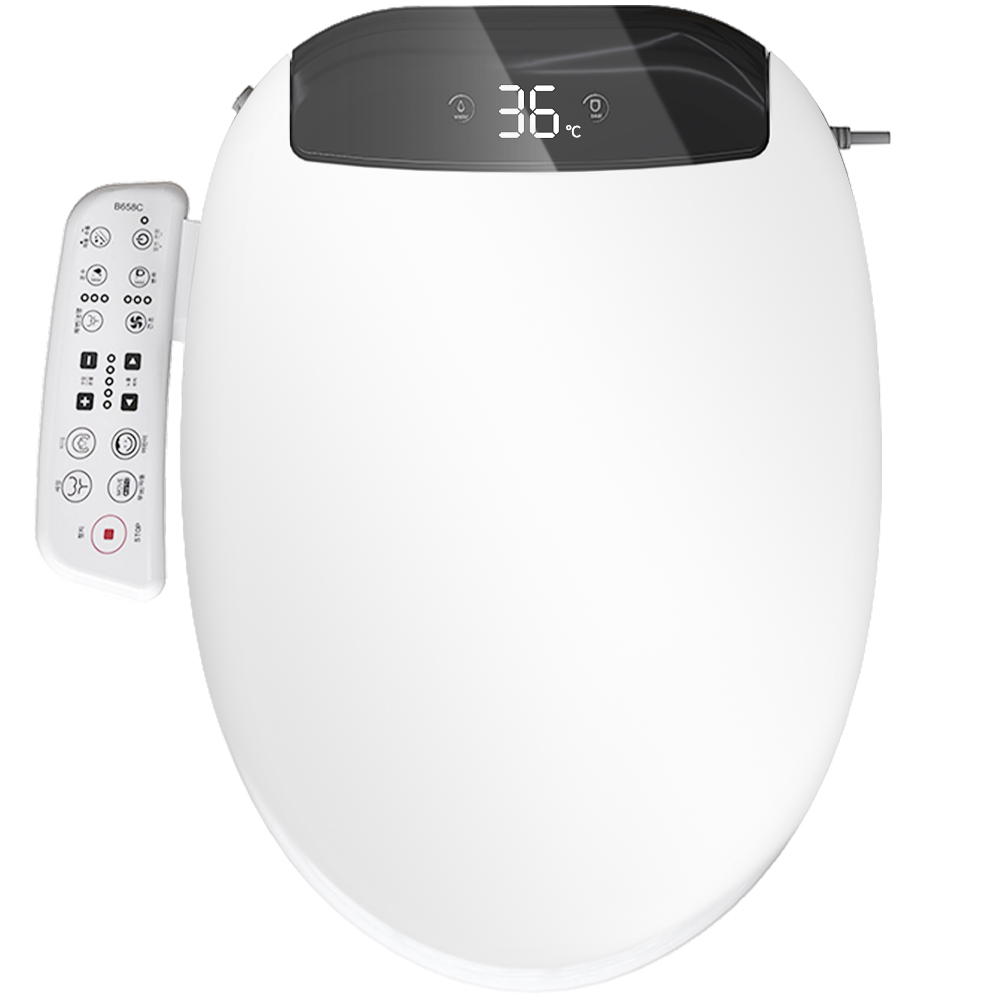
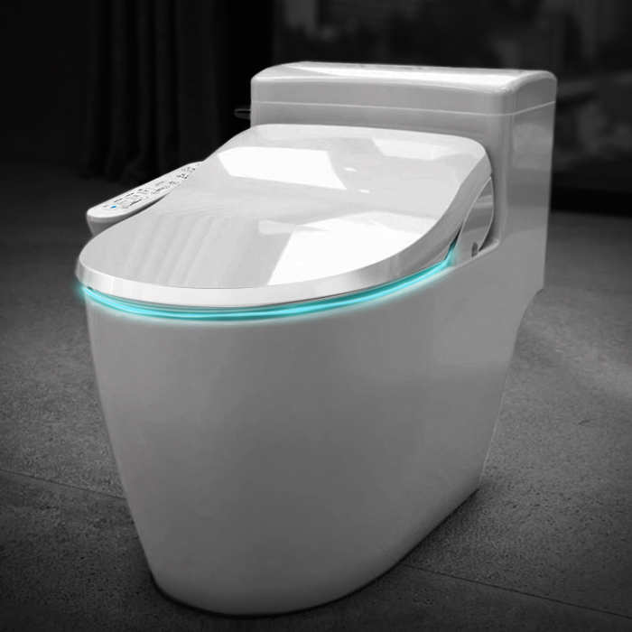
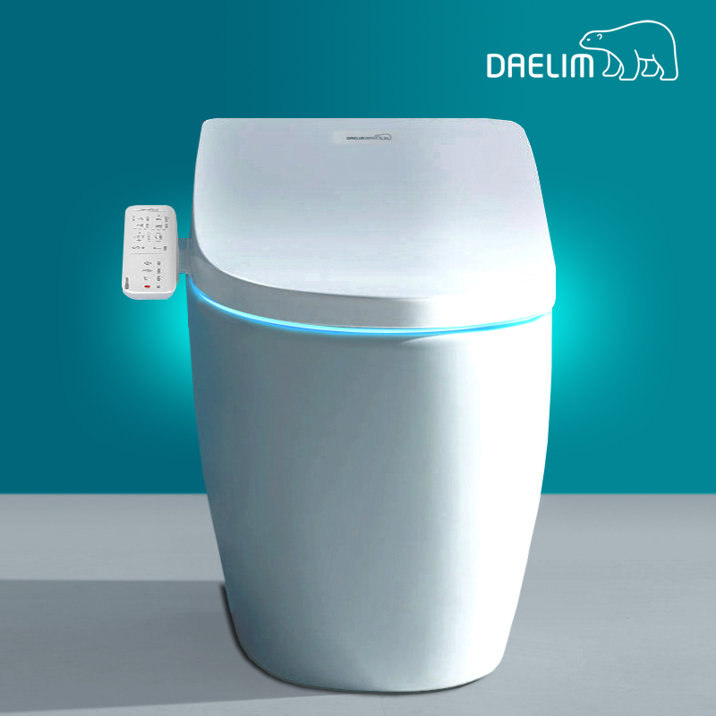

홈 › 제품리뷰 › 생활/가전
비데, 가성비 방수냐 직수냐
작성: 생활서식 모음 · 2026-08-23

파트너스 활동의 일환으로 일정액의 수수료를 지급받습니다
🛒 오늘의 쿠팡 특가 보러가기 →
비데, 화장실에 새로 달려는데 뭘 살까요?
핵심은 "방수와 세척 방식(필터/직수), 설치" 3대 를※ 대부분 고객 직접설치 상품이며, 전기·수도 연결에 주의하세요.
📋 목차
비데, 가성비 방수냐 직수냐 — 결론 먼저 스펙 비교표: 한눈에 보기 비데 고를 때 봐야 할 4가지 가성비냐 직수냐, 뭘 사야 할까? 자주 묻는 질문 (FAQ) 결론: 한 줄 요약
비데, 가성비 방수냐 직수냐 — 결론 먼저
비데는 "세척 방식(필터/직수)과 방수·기능" 으로 갈려요.필터리스 가성비 , 위생·관리 편하면 직수식 , 기능 풍부면 올인원 이 무난합니다.
1 가성비·기본 (가성비 초이스)
가성비

필터리스 가성비
1. Munjjing 비데 (IPX5 방수·필터리스·온풍건조)
직수·올인원은 아니어도
추천 대상
비데를 저렴하게 처음 설치하는 분 필터 교체 없는 필터리스를 원하는 분 자동노즐세척·온풍건조 등 기본 기능이면 되는 분 장점
9만원대로 부담 없이 비데 설치 필터리스라 필터 교체 비용·번거로움이 없음 자동노즐세척·온풍건조·무드등 등 기본 기능 충실 단점
이 제품은 가성비·기본용 입니다. 위생·관리면 2번 직수, 기능 풍부면 3번 올인원으로 가세요. "기본"이면 가성비 좋아요.
한줄 리뷰
"비데를 저렴하게 기본 기능으로"면 Munjjing이 무난합니다. 필터리스라 관리도 편해요. 직수·올인원이면 2·3번을 보세요.
주요 스펙
제품: Munjjing 비데 방수: IPX5 특징: 필터리스·온풍건조 배송: 로켓배송 가격: 약 94,900원 (변동 가능) ※ 실제 스펙·가격과 차이가 있을 수 있습니다
2 위생·직수 (베스트 초이스)
베스트

위생 직수식
2. 앤트 비데 (IPX8 방수·직수·하이브리드 필터리스, IPX-750A)
직수식+IPX8 방수로
추천 대상
물탱크에 물이 고이지 않는 직수식을 원하는 분 위생·방수를 확실히 챙기려는 분 필터 교체 부담을 줄이려는 분 장점
직수식이라 물이 고이지 않아 위생적 IPX8 방수라 물 사용에 안심 하이브리드 필터리스로 관리가 편함 단점
저렴한 필터리스면 1번, 기능 풍부면 3번 올인원입니다. 2번은 "직수+IPX8 방수" 의 실속 구간 — 위생·관리에 가장 무난합니다.
한줄 리뷰
"물 고임 없는 직수로 위생까지"면 앤트가 좋습니다. 깔끔해요. 기능 풍부면 3번을 보세요.
주요 스펙
제품: 앤트 비데 IPX-750A 방수: IPX8 방식: 직수·하이브리드 배송: 로켓배송 가격: 약 168,200원 (변동 가능) ※ 실제 스펙·가격과 차이가 있을 수 있습니다
3 기능·완성도 (프리미엄)
프리미엄

올인원
3. 대림바스 비데 (IPX7 방수·풀터치·LED·버블세정, DDS-S160A)
풀터치·버블세정·마사지까지
추천 대상
다양한 세정·마사지 기능을 원하는 분 풀터치·LED 등 완성도를 중시하는 분 브랜드(대림바스) 제품을 원하는 분 장점
풀터치 조작·LED 조명으로 편의·완성도가 좋음 집중 버블세정·마사지 등 기능이 풍부 대림바스라 품질·AS가 안정적 단점
저렴한 필터리스면 1번, 위생 직수면 2번이 합리적입니다. 3번은 올인원 기능+완성도 를 원하는 분에게 값어치가 있습니다.
한줄 리뷰
"기능 풍부하게 제대로"면 대림바스가 좋습니다. 완성도가 좋아요. 기본이면 1·2번이 합리적입니다.
주요 스펙
제품: 대림바스 비데 DDS-S160A 방수: IPX7 특징: 풀터치·LED·버블세정 배송: 로켓배송 가격: 약 198,000원 (변동 가능) ※ 실제 스펙·가격과 차이가 있을 수 있습니다
스펙 비교표: 한눈에 보기
가격·풍량·무게 중 본인에게 중요한 기준부터 보세요. "최고" 표시는 3제품 중 객관적 1위 값입니다.
← 좌우로 스크롤 →
비데 고를 때 봐야 할 4가지
세척 방식·방수만 챙겨도 후회가 적습니다.
1) 세척 방식 — 필터/직수
직수식은 물이 고이지 않아 위생적(필터 교체 부담 적음) 필터식은 필터로 걸러주지만 주기적 교체 필요 필터리스는 필터 교체 없이 관리가 편함 2) 방수 — 안전
화장실 물 사용이 잦아 방수 등급(IPX5~8)이 중요 숫자가 높을수록 물에 강함 전기 제품이므로 방수·안전 기능 확인 3) 기능 — 편의
온수·온좌·온풍건조 등 기본 기능 노즐 자동세척·살균 등 위생 기능 풀터치·마사지·야간등 등 부가 기능 4) 설치 — 호환
변기 규격(일체형/분리형)에 맞는지 확인 대부분 고객 직접설치(전기·수도 연결) 설치가 부담되면 설치 서비스 고려 가성비냐 직수냐, 뭘 사야 할까?
위생 요구와 기능만 정하면 답이 나옵니다.
가성비·기본: 1번 Munjjing → 필터리스위생·직수: 2번 앤트 → 물 고임 없이기능·완성도: 3번 대림바스 → 올인원자주 묻는 질문 (FAQ)
Q1. 직수식과 저수식(필터식) 비데 중 뭐가 나은가요? 위생·관리면 직수식이 유리합니다. 직수식은 수돗물을 바로 데워 쓰기 때문에 물탱크에 물이 고이지 않아 위생적이고, 저수식은 탱크에 데운 물을 저장해 대기전력·물 고임이 있을 수 있습니다. 위생·관리를 중시하면 직수식, 순간 온수 성능·가격을 보면 저수식도 선택지입니다.
Q2. 비데 방수 등급(IPX)은 왜 중요한가요? 화장실 물 환경에서 안전 때문입니다. 비데는 전기 제품이면서 물을 자주 쓰므로 방수 등급이 높을수록(IPX7~8) 물에 안전합니다. 청소 중 물이 튀거나 습한 환경에서도 고장·감전 위험이 줄어듭니다. 방수 등급과 안전 인증을 확인하세요.
Q3. 비데는 직접 설치할 수 있나요? 대부분 고객 직접설치가 가능하지만 주의가 필요합니다. 기존 변기 시트를 떼고 비데를 얹은 뒤 수도 분기와 전원을 연결하는 방식으로, 설명서를 따르면 자가 설치가 가능합니다. 다만 수도 연결·전기 콘센트(접지) 위치가 맞아야 하며, 누수·전기 안전이 걱정되면 설치 서비스를 이용하세요.
Q4. 필터리스는 필터가 없어도 괜찮나요? 수질이 양호하면 무방하며 관리가 편합니다. 필터리스는 별도 정수 필터가 없어 필터 교체 비용·번거로움이 없다는 장점이 있습니다. 다만 수질이 매우 나쁜 지역이면 별도 필터가 있는 제품이 나을 수 있습니다. 대부분의 상수도 환경에선 필터리스로도 충분히 쓰입니다.
Q5. 비데 위생 관리는 어떻게 하나요? 노즐 자동세척·정기 청소로 관리합니다. 대부분 사용 전후 노즐을 자동 세척하는 기능이 있고, 노즐·시트를 주기적으로 닦아주면 위생적입니다. 직수식은 물 고임이 없어 관리가 수월하고, 살균·노즐세척 기능이 있으면 더 편합니다. 제품별 청소 방법을 따르세요.
결론: 한 줄 요약
1) Munjjing 필터리스 — 약 94,900원 / 가성비·기본. IPX5.2) 앤트 직수 — 약 168,200원 / 위생·직수. IPX8.3) 대림바스 올인원 — 약 198,000원 / 기능·완성도. 풀터치.이 포스팅은 쿠팡 파트너스 활동의 일환으로, 이에 따른 일정액의 수수료를 제공받습니다.